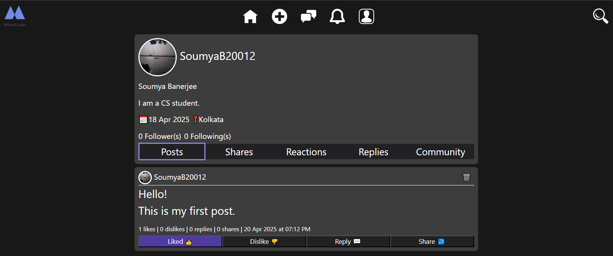
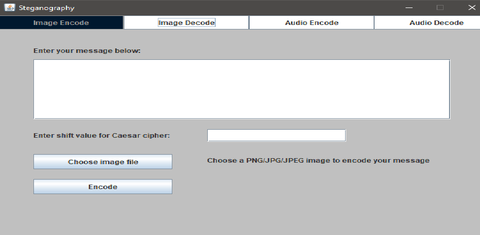

Microloom: A Social Media Web Application
Tech Used: ASP.NET 4.8, C#, HTML, CSS, JavaScript, Bootstrap and MS SQL Server.
- Implemented authentication and authorization via cookies; used OTP verification for password resets.
- Enabled post creation, reactions (likes and dislikes), sharing, and commenting.
- Integrated real-time messaging with SignalR and built a notification system for user interactions.
- Designed a profile system allowing users to edit their profiles, upload or remove profile pictures, and view
interaction history.

Image & Audio Steganography Tool
Tech Used: Java (Core), Swing Framework
- Built a Java GUI app for LSB steganography to hide encrypted text in PNG and WAV files.
- Used Caesar cipher with a user-defined shift value; embedded cipher key within hidden data.
- Applied OOP principles and handled RGB pixel manipulation and WAV sample encoding with Least
Significant Bit of Least Significant Byte, supporting Little Endian format.
- Implemented custom decoding logic for accurate extraction and decryption from image and audio files.